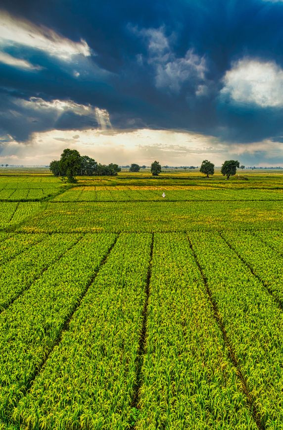

Features
Delivering Structured Agricultural Solutions That Drive Impact
Our approach integrates project management systems, agronomy support, and market linkages to ensure effective implementation, improved productivity, and sustainable growth for rural farming communities.
Structured Farm Planning
Development of comprehensive farm plans that align crop selection, soil health management, and resource utilization with sustainable agricultural practices.
Agronomy Support & Training
Continuous farmer engagement through training, field monitoring, and technical support to promote best practices and improve productivity.
Monitoring & Evaluation Systems
Implementation of structured monitoring systems to track farm performance, ensure accountability, and support effective project execution.
Value Chain & Market Linkages
Strengthening the farm-to-market system by connecting farmers to reliable buyers, reducing losses, and ensuring consistent quality standards.